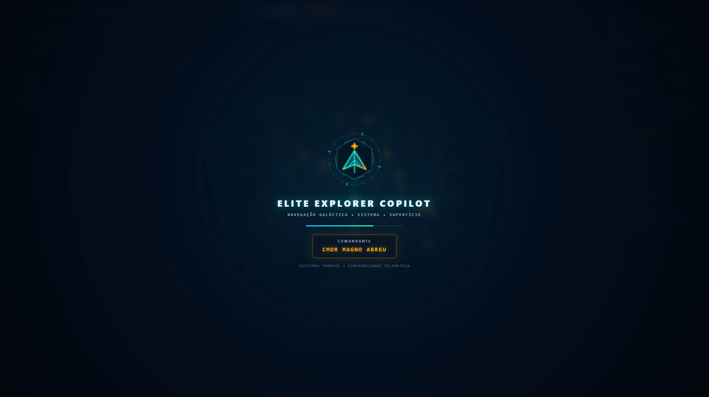
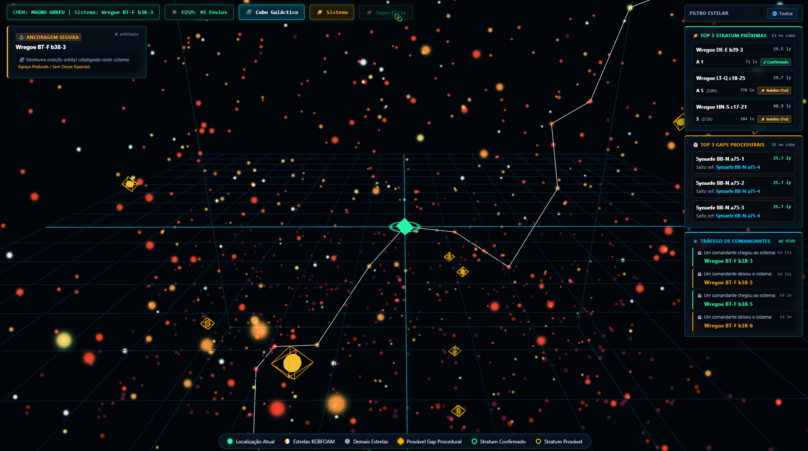
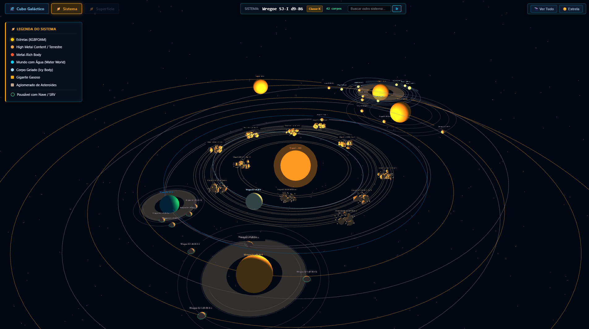
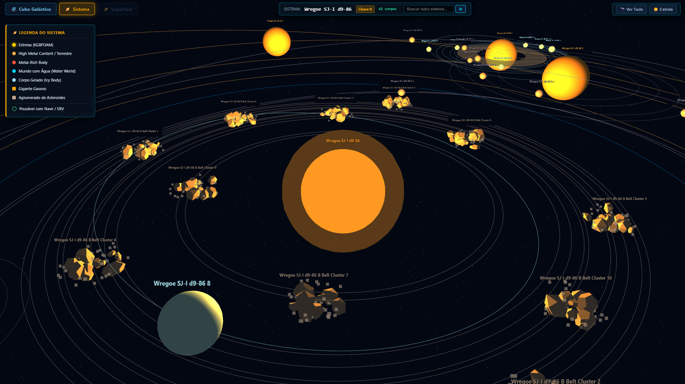

EDSM • EDDN • SPANSH • INARA • JOURNAL SSE
Explore the Milky Way with Live HUD Telemetry.
A real-time space exploration, exobiology, and planetary surface navigation copilot for Elite Dangerous. Reads your local game logs directly and renders 3D galactic cubes, star system orreries, and a 2.5D Columbus surface HUD.
Java 22 + Spring Boot 3
Three.js WebGL
ZeroMQ EDDN Stream
Local Disk Cache

Click to expand
IN MOTION
Live System Demonstrations
Recorded straight from the live HUD connected to Elite Dangerous telemetry.
HUD CAPTURES
Interface Screenshots
Click any capture to inspect the telemetry panels and 3D views in full screen.



CAPABILITIES
Built for Deep-Space Commanders
3D Galactic Cube
Interactive Three.js stellar sector map with KGBFOAM classification, active NavRoute line, and persistent local cube cache.
Stratum Tectonicas Radar
Highlights nearby high-value exobiology candidates combining Spansh EDDN confirmations and planetary atmosphere filtering.
Procedural Void Hunter
Detects sequence gaps across Stellar Forge mass boxes to pinpoint likely unexplored systems around your ship.
3D Star System Orrery
Visualizes orbits, moons, rings, surface materials, landability, and DSS bio/geo counts in real time.
2.5D Surface HUD
Seamless switch between global -180°/+180° map and 1,200 m tactical radar with exobiology 3-sample diversity rings.
Live Journal & Community Sync
Streams Journal, Status.json, and EDDN traffic via SSE, with optional EDSM sync and INARA trade route integration.
DEPLOYMENT
Up and Running in Seconds
- 1 Install Java 22 on Windows alongside Elite Dangerous.
- 2 Optionally add your EDSM API key in iniciar.bat (Commander name is detected automatically from the Journal).
- 3 Double-click iniciar.bat and open http://localhost:8080 from your PC or tablet on the local network.
powershell / cmd
mvn clean package -DskipTests java -jar target/elite-explorer-1.0.0.jar